Azure Confidential Compute
Setting up an SGX instance
Secure-Signer has been developed and tested on Microsoft Azure. The goal of this guide is to expedite setting up your own Azure server. Stay tuned for more information on setting up Secure-Signer at home or on other cloud providers.
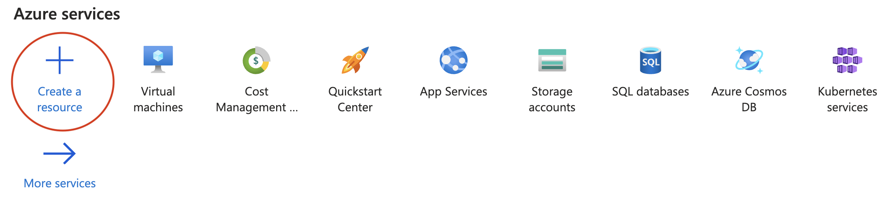Select Create a resource.
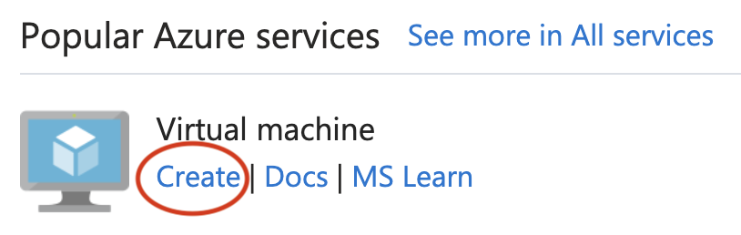
Select Create to start setting up a VM.
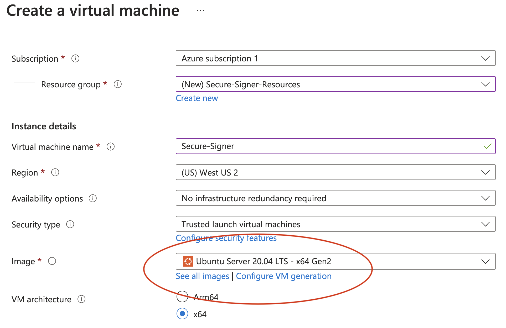
Ensure that the Image is set to Ubuntu Server 20.04 LTS -x64 Gen2.
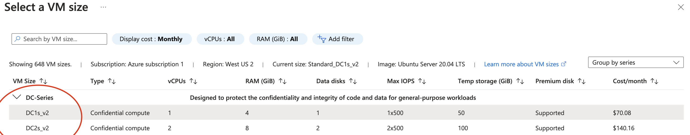
Select a VM size from the DC-Series. The smallest (and cheapest) VM with 4 GiB of RAM is sufficient to run Secure-Signer; however, it is recommended to use a larger VM if you plan to run the execution client and consensus client on this server. For this demo, we will use Secure-Signer as a truly remote-signing tool and choose the 4 GiB VM (our execution client and consensus client will be run externally on a different server).
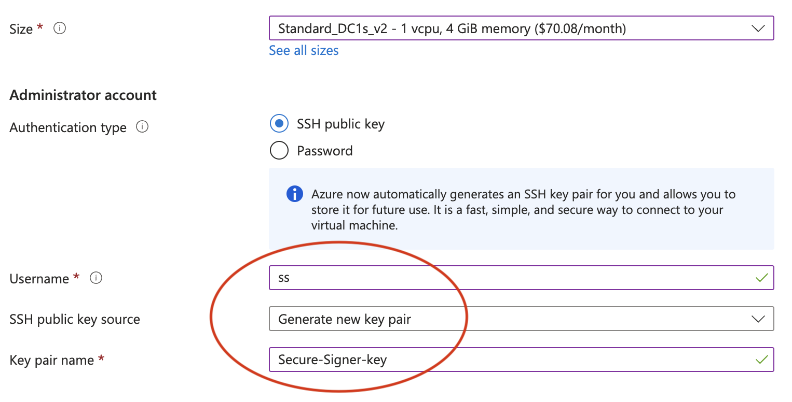
Set SSH credentials according to your needs. In this case we will generate a new SSH private key called Secure-Signer-key that we can use to sign into this server.
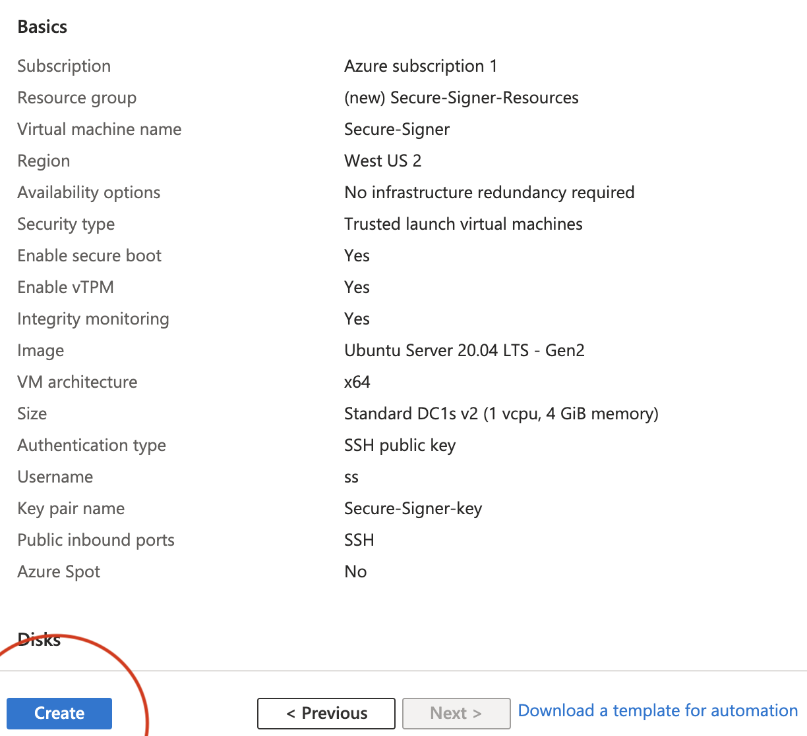
Add any additional configurations that fit your needs. Then select Review and Create. Verify the OS image and VM size are correct. Then Create the VM.
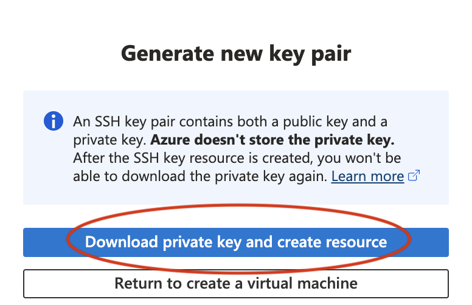
Securely store the SSH private key, for example in the ~/.ssh/ directory.
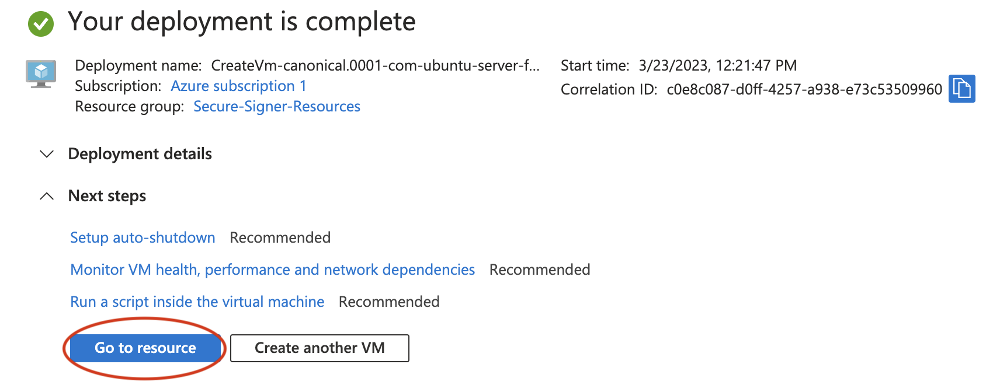
Once deployment finishes, select Go to resource.
Increasing VM disk space
> This is optional if Secure-Signer is being used as a standalone remote-signing tool. If you plan to run the consensus client and execution client on this same VM, we recommend following these steps to increase the size of the disk.
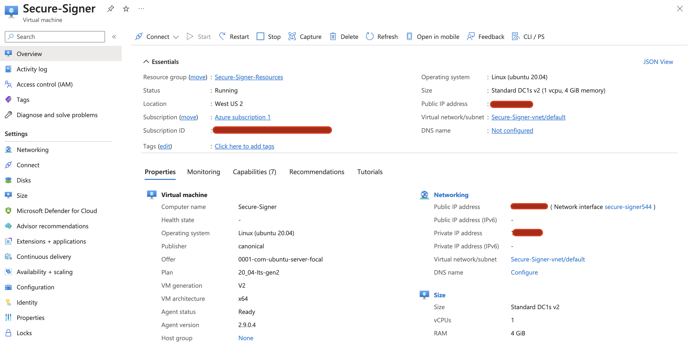To adjust the disk size, first stop the VM.
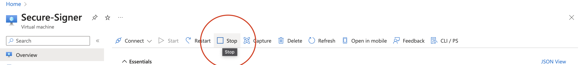Select Stop
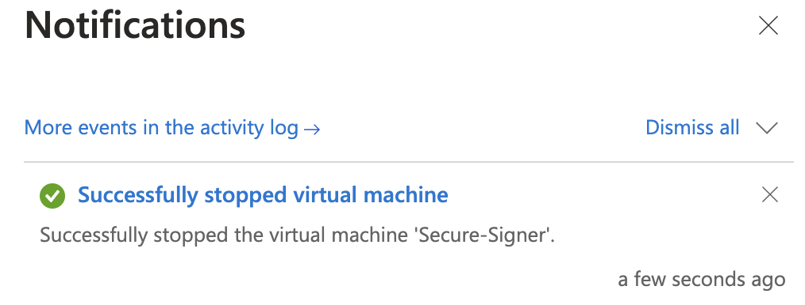
Confirm Yes and wait for confirmation that is has been stopped.
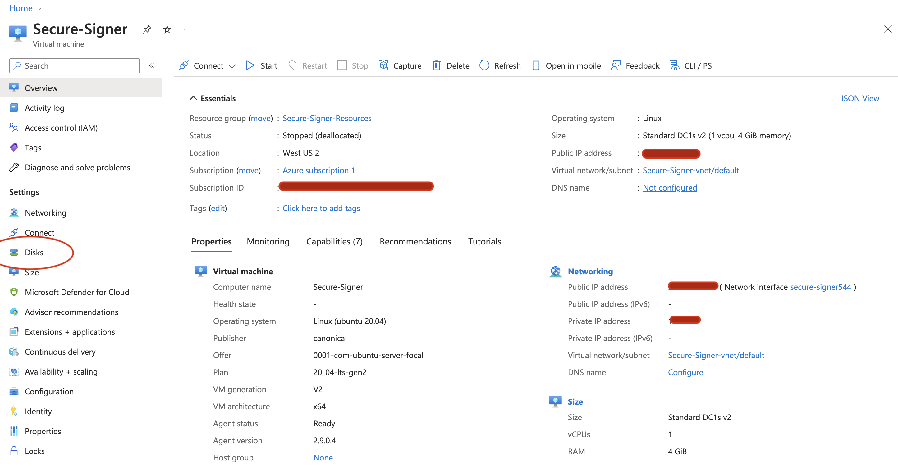
Navigate to the Disks tabs on under Settings on the left-hand side.
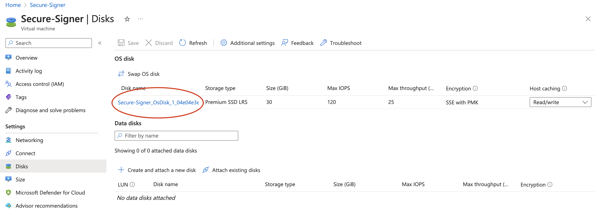
Select your Disk name in this case Secure-Signer_OsDisk_1_04e04e...
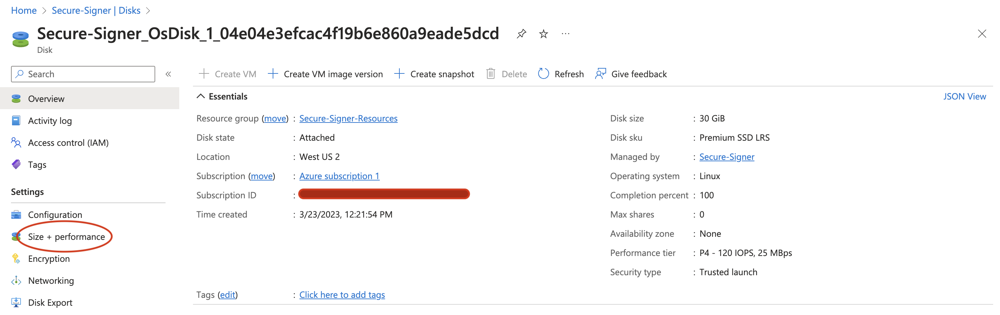
Select Size + performance under Settings on the left-hand side.
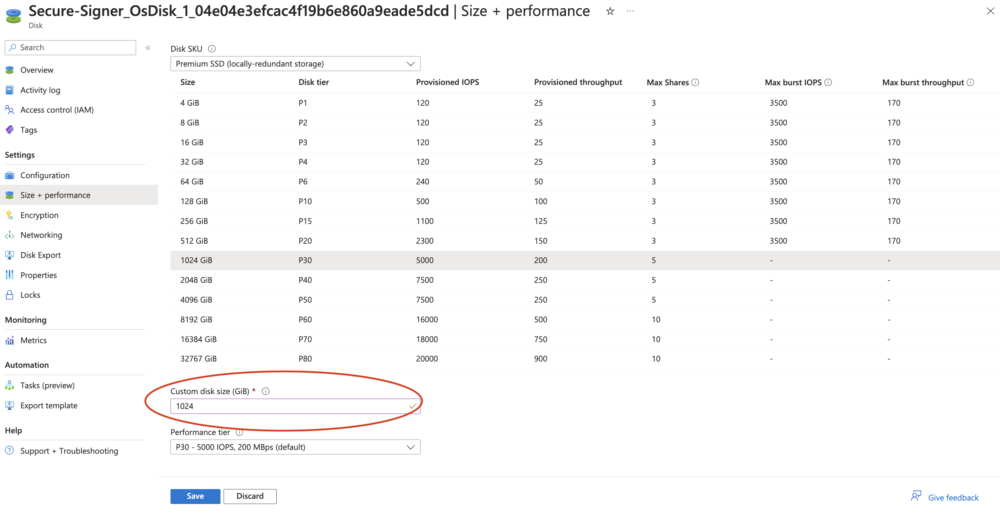
Select a disk size and click Save. In this case, a 1024 GiB disk is sufficient to store the required state for the execution client.
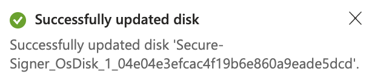 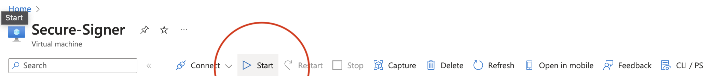
Navigate back to the overview page and Start the VM again.
In a terminal run the following, substituting your server’s IP and the path to your SSH private key:
ssh -i <path_to_ssh_key> ss@XX.XX.XXX.XXX
Congratulations! At this point you are ready to proceed to the [next section](../installation) to install the dependencies for Secure-Signer.
SSH Tunneling to Secure-Signer
It’s possible to run Secure-Signer on the remote Azure server while running your consensus client and execution client locally. Assuming Secure-Signer is installed following the [these steps](../installation) and it is running on port 9003, you can SSH tunnel by running:
ssh -i <path_to_ssh_key> -N -L 9003:localhost:9003 ss@XX.XX.XXX.XXX